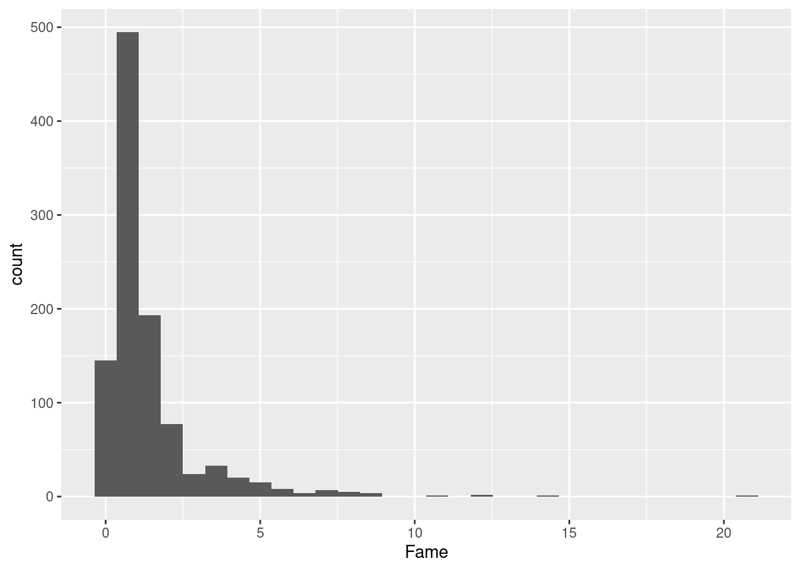
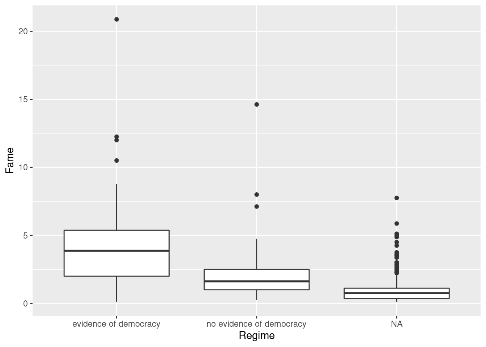

n_bread <- 8
n_pb <- 3
n_jelly <- 9
# write instructions in R here8 Programming: Orientation and Reading in Data1
Motivation: Data and You
The modal social science project starts by importing existing datasets. Datasets come in all shapes and sizes. As you search for new data you may encounter dozens of file extensions – csv, xlsx, dta, sav, por, Rdata, Rds, txt, xml, json, shp … the list continues. Although these files can often be cumbersome, its a good to be able to find a way to encounter any file that your research may call for.
Reviewing data import will allow us to get on the same page on how computer systems work.
Where are we? Where are we headed?
Today we’ll cover:
- What’s what in RStudio
- What R is, at a high level
- How to read in data
- Comment on coding style on the way
Check your understanding
- What is the difference between a file and a folder?
- In the RStudio windows, what is the difference between the “Source” Pane and the “Console”? What is a “code chunk”?
- How do you read a R help page? What is the
Usagesection, theValuessection, and theExamplessection? - What use is the “Environment” Pane?
- How would you read in a spreadsheet in R?
- How would you figure out what variables are in the data? size of the data?
- How would you read in a
csvfile, adtafile, asavfile?
8.1 General Orientation
- RStudio is a GUI and an IDE for the programming language R. A Graphical User Interface allows users to interface with the software (in this case R) using graphical aids like buttons and tabs. Often we don’t think of GUIs because to most computer users, everything is a GUI (like Microsoft Word or your “Control Panel”), but it’s always there! A Integrated Development Environment just says that the software to interface with R comes with useful useful bells and whistles to give you shortcuts.
The Console is kind of a the core window through which you see your GUI actually operating through R. It’s not graphical so might not be as intuitive. But all your results, commands, errors, warnings.. you see them in here. A console tells you what’s going on now.
Via the GUI, you the analyst needs to send instructions, or commands, to the R application. The verb for this is “run” or “execute” the command. Computer programs ask users to provide instructions in very specific formats. While a English-speaking human can understand a sentence with a few typos in it by filling in the blanks, the same typo or misplaced character would halt a computer program. Each program has its own requirements for how commands should be typed; after all, each of these is its own language. We refer to the way a program needs its commands to be formatted as its syntax.
Theoretically, one could do all their work by typing in commands into the Console. But that would be a lot of work, because you’d have to give instructions each time you start your data analysis. Moreover, you’ll have no record of what you did. That’s why you need a script. This is a type of code. It can be referred to as a source because that is the source of your commands. Source is also used as a verb; “source the script” just means execute it. RStudio doesn’t start out with a script, so you can make one from “File > New” or the New file icon.
You can also open scripts that are in folders in your computer. A script is a type of File. Find your Files in the bottom-right “Files” pane.
To load a dataset, you need to specify where that file is. Computer files (data, documents, programs) are organized hiearchically, like a branching tree. Folders can contain files, and also other folders. The GUI toolbar makes this lineaer and hiearchical relationship apparent. When we turn to locate the file in our commands, we need another set of syntax. Importantly, denote the hierarchy of a folder by the / (slash) symbol. data/input/2018-08 indicates the 2018-08 folder, which is included in the input folder, which is in turn included in the data folder.
Files (but not folders) have “file extensions” which you are probably familiar with already: .docx, .pdf, and .pdf. The file extensions you will see in a stats or quantitative social science class are:
.pdf: PDF, a convenient format to view documents and slides in, regardless of Mac/Windows..csv: A comma separated values file.xlsx: Microsoft Excel file.dta: Stata data.sav: SPSS data.R: R code (script).Rmd: Rmarkdown code (text + code).do: Stata code (script)
- In R, there are two main types of scripts. A classic
.Rfile and a.Rmdfile (for Rmarkdown). A .R file is just lines and lines of R code that is meant to be inserted right into the Console. A .Rmd tries to weave code and English together, to make it easier for users to create reports that interact with data and intersperse R code with explanation.
Rmarkdown facilitates is the use of code chunks, which are used here. These start and end with three back-ticks. In the beginning, we can add options in curly braces ({}). Specifying r in the beginning tells to render it as R code. Options like echo = TRUE switch between showing the code that was executed or not; eval = TRUE switch between evaluating the code. More about Rmarkdown in later sections. For example, this code chunk would evaluate 1 + 1 and show its output when compiled, but not display the code that was executed.
8.2 But what is R
R is a programming language primarily used for statistical computing. It’s free, open source and has an extensive community that is constantly developing new tools and packages that extend its functionality in a lot of different ways (for example, the tidyverse project).
One feature of many programming languages is that they allow for “object-oriented” programming. In an object-oriented programming paradigm, we work with “objects” – some sort of structure that exists in the computer memory – that contains attributes and on which we can execute code (methods). R’s object-oriented support has some interesting quirks compared to other languages like C or Python, but
Everything in R is an object, including its most basic data types. R has six basic data types:
- character
- numeric (real or decimal)
- integer
- logical
- complex
These data types make up the basic data structures of R
- atomic vectors
- lists
- matrix
- data frame
- factors
Beyond that, many R routines
8.3 The Computer and You: Giving Instructions
We’ll do the Peanut Butter and Jelly Exercise in class as an introduction to programming for those who are new.
Assignment: Take 5 minutes to write down on a piece of paper, how to make a peanut butter and jelly sandwich. Be as concise and unambiguous as possible so that a robot (who doesn’t know what a PBJ is) would understand. You can assume that there will be loaf of sliced bread, a jar of jelly, a jar of peanut butter, and a knife.
Simpler assignment: Say we just want a robot to be able to tell us if we have enough ingredients to make a peanut butter and jelly sandwich. Write down instructions so that if told how many slices of bread, servings of peanut butter, and servings of jelly you have, the robot can tell you if you can make a PBJ.
Now, translate the simpler assignment into R code using the code below as a starting point:
8.4 Base-R vs. tidyverse
One last thing before we jump into data. Many things in R and other open source packages have competing standards. A lecture on a technique inevitably biases one standard over another. Right now among R users in this area, there are two families of functions: base-R and tidyverse. R instructors thus face a dilemma about which to teach primarily.2
In this prefresher, we try our best to choose the one that is most useful to the modal task of social science researchers, and make use of the tidyverse functions in most applications. but feel free to suggest changes to us or to the booklet.
Although you do not need to choose one over the other, for beginners it is confusing what is a tidyverse function and what is not. Many of the tidyverse packages are covered in this 2017 graphic below, and the cheat-sheets that other programmers have written: https://www.rstudio.com/resources/cheatsheets/

The following side-by-side comparison of commands for a particular function compares some tidyverse and non-tidyverse functions (which we refer to loosely as base-R). This list is not meant to be comprehensive and more to give you a quick rule of thumb.
Dataframe subsetting
| In order to … | in tidyverse: | in base-R: |
|---|---|---|
| Count each category | count(df, var) |
table(df$var) |
| Filter rows by condition | filter(df, var == "Female") |
df[df$var == "Female", ] or subset(df, var == "Female") |
| Extract columns | select(df, var1, var2) |
df[, c("var1", "var2")] |
| Extract a single column as a vector | pull(df, var) |
df[["var"]] or df[, "var"] |
| Combine rows | bind_rows() |
rbind() |
| Combine columns | bind_cols() |
cbind() |
| Create a dataframe | tibble(x = vec1, y = vec2) |
data.frame(x = vec1, y = vec2) |
| Turn a dataframe into a tidyverse dataframe | tbl_df(df) |
Remember that tidyverse applies to dataframes only, not vectors. For subsetting vectors, use the base-R functions with the square brackets.
Read data
Some non-tidyverse functions are not quite “base-R” but have similar relationships to tidyverse. For these, we recommend using the tidyverse functions as a general rule due to their common format, simplicity, and scalability.
| In order to … | in tidyverse: | in base-R: |
|---|---|---|
| Read a Excel file | read_excel() |
read.xlsx() |
| Read a csv | read_csv() |
read.csv() |
| Read a Stata file | read_dta() |
read.dta() |
| Substitute strings | str_replace() |
gsub() |
| Return matching strings | str_subset() |
grep(., value = TRUE) |
Merge data1 and data2 on variables x1 and x2 |
left_join(data1, data2, by = c("x1", "x2")) |
merge(data1, data2, by.x = "x1", by.y = "x2", all.x = TRUE) |
Visualization
Plotting by ggplot2 (from your tutorials) is also a tidyverse family.
| In order to … | in tidyverse: | in base-R: |
|---|---|---|
| Make a scatter plot | ggplot(data, aes(x, y)) + geom_point() |
plot(data$x, data$y) |
| Make a line plot | ggplot(data, aes(x, y)) + geom_line() |
plot(data$x, data$y, type = "l") |
| Make a histogram | ggplot(data, aes(x, y)) + geom_histogram() |
hist(data$x, data$y) |
8.5 A is for Athens
For our first dataset, let’s try reading in a dataset on the Ancient Greek world. Political Theorists and Political Historians study the domestic systems, international wars, cultures and writing of this era to understand the first instance of democracy, the rise and overturning of tyranny, and the legacies of political institutions.
This POLIS dataset was generously provided by Professor Josiah Ober of Stanford University. This dataset includes information on city states in the Ancient Greek world, parts of it collected by careful work by historians and archaeologists. It is part of his recent books on Greece (Ober 2015), “The Rise and Fall of Classical Greece”3 and Institutions in Ancient Athens (Ober 2010) , “Democracy and Knowledge: Innovation and Learning in Classical Athens.”4
8.5.1 Locating the Data
What files do we have in the data/input folder?
data/input/Nunn_Wantchekon_AER_2011.dta data/input/Nunn_Wantchekon_sample.dta
data/input/acs2015_1percent.csv data/input/gapminder_wide.Rds
data/input/gapminder_wide.tab data/input/german_credit.sav
data/input/justices_court-median.csv data/input/ober_2018.xlsx
data/input/sample_mid.csv data/input/sample_polity.csv
data/input/upshot-siena-polls.csv data/input/usc2010_001percent.Rds
data/input/usc2010_001percent.csv A typical file format is Microsoft Excel. Although this is not usually the best format for R because of its highly formatted structure as opposed to plain text, recent packages have made this fairly easy.
8.5.2 Reading in Data
In Rstudio, a good way to start is to use the GUI and the Import tool. Once you click a file, an option to “Import Dataset” comes up. RStudio picks the right function for you, and you can copy that code, but it’s important to eventually be able to write that code yourself.
For the first time using an outside package, you first need to install it.
install.packages("readxl")After that, you don’t need to install it again. But you do need to load it each time.
library(readxl)The package readxl has a website: https://readxl.tidyverse.org/. Other packages are not as user-friendly, but they have a help page with a table of contents of all their functions.
help(package = readxl)From the help page, we see that read_excel() is the function that we want to use.
Let’s try it.
library(readxl)
ober <- read_excel("data/input/ober_2018.xlsx")Review: what does the / mean? Why do we need the data term first? Does the argument need to be in quotes?
8.5.3 Inspecting
For almost any dataset, you usually want to do a couple of standard checks first to understand what you loaded.
ober# A tibble: 1,035 × 10
polis_number Name Latit…¹ Longi…² Helle…³ Fame Size Colon…⁴ Regime Delian
<dbl> <chr> <dbl> <dbl> <chr> <dbl> <chr> <dbl> <chr> <chr>
1 1 Alalie 42.1 9.51 most G… 1.12 100-… 0 <NA> not i…
2 2 Empor… 42.1 3.11 most b… 2.12 25-1… 0 <NA> not i…
3 3 Massa… 43.3 5.38 most G… 4 25-1… 2 no ev… not i…
4 4 Rhode 42.3 3.17 most G… 0.87 <NA> 0 <NA> not i…
5 5 Abaka… 38.1 15.1 most b… 1 <NA> 0 <NA> not i…
6 6 Adran… 37.7 14.8 most G… 1 <NA> 0 <NA> not i…
7 7 Agyri… 37.7 14.5 most G… 1.25 <NA> 0 no ev… not i…
8 8 Aitna 38.2 15.6 most G… 3.25 200-… 1 no ev… not i…
9 9 Akrag… 37.3 13.6 most G… 6.37 500 … 0 evide… not i…
10 10 Akrai 37.1 14.9 most G… 1.25 <NA> 0 <NA> not i…
# … with 1,025 more rows, and abbreviated variable names ¹Latitude, ²Longitude,
# ³Hellenicity, ⁴Coloniesdim(ober)[1] 1035 10Graphics are useful for grasping your data - we will cover them more deeply later on.
ggplot(ober, aes(x = Fame)) + geom_histogram()`stat_bin()` using `bins = 30`. Pick better value with `binwidth`.
What about the distribution of fame by regime?
ggplot(ober, aes(y = Fame, x = Regime, group = Regime)) +
geom_boxplot()
What do the 1’s, 2’s, and 3’s stand for?
8.5.4 Finding observations
These tidyverse commands from the dplyr package are newer and not built-in, but they are one of the increasingly more popular ways to wrangle data.
- 80 percent of your data wrangling needs might be doable with these basic
dplyrfunctions:select,mutate,group_by,summarize, andarrange. - These verbs roughly correspond to the same commands in SQL, another important language in data science.
- The
%>%symbol is a pipe. It takes the thing on the left side and pipes it down to the function on the right side. We could have donecount(cen10, race)ascen10 %>% count(race). That means takecen10and pass it on to the functioncount, which will count observations by race and return a collapsed dataset with the categories in its own variable and their respective counts inn.
Exercises
1
What is the Fame value of Delphoi?
# Enter here2
Find the polis with the top 10 Fame values.
# Enter here3
Make a scatterplot with the number of colonies on the x-axis and Fame on the y-axis.
# Enter here4
Find the correct function to read the following datasets into your R instance.
data/input/acs2015_1percent.csv: A one percent sample of the American Community Surveydata/input/gapminder_wide.tab: Country-level wealth and health from Gapminder5data/input/gapminder_wide.Rds: A Rds version of the Gapminder (What is a Rds file? What’s the difference?)data/input/Nunn_Wantchekon_sample.dta: A sample from the Afrobarometer survey (which we’ll explore tomorrow)..dtais a Stata format.data/input/german_credit.sav: A hypothetical dataset on consumer credit..savis a SPSS format.
Our Recommendations: Look at the packages haven and readr
# Enter here, perhaps making a chunk for each file.5
Read Ober’s codebook and find a variable that you think is interesting. Check the distribution of that variable in your data, get a couple of statistics, and summarize it in English.
# Enter hereSpecial thanks to Shiro Kuriwaki for developing the original version of this tutorial↩︎
See for example this community discussion: https://community.rstudio.com/t/base-r-and-the-tidyverse/2965/17↩︎
Ober, Josiah (2015). The Rise and Fall of Classical Greece. Princeton University Press.↩︎
Ober, Josiah (2010). Democracy and Knowledge: Innovation and Learning in Classical Athens. Princeton University Press.↩︎
Formatted and taken from https://doi.org/10.7910/DVN/GJQNEQ↩︎
Special thanks to Shiro Kuriwaki and Yon Soo Park for developing the original module↩︎
Special thanks to Shiro Kuriwaki for developing the original version of this tutorial↩︎
Special thanks to Shiro Kuriwaki and Yon Soo Park for developing the original module↩︎
Module originally written by Shiro Kuriwaki, Connor Jerzak, and Yon Soo Park↩︎
Module originally written by Connor Jerzak and Shiro Kuriwaki↩︎
Special thanks to Shiro Kuriwaki for developing the original version of this tutorial↩︎
Special thanks to Shiro Kuriwaki for developing the original version of this tutorial↩︎
Special thanks to Shiro Kuriwaki for developing the original version of this tutorial↩︎